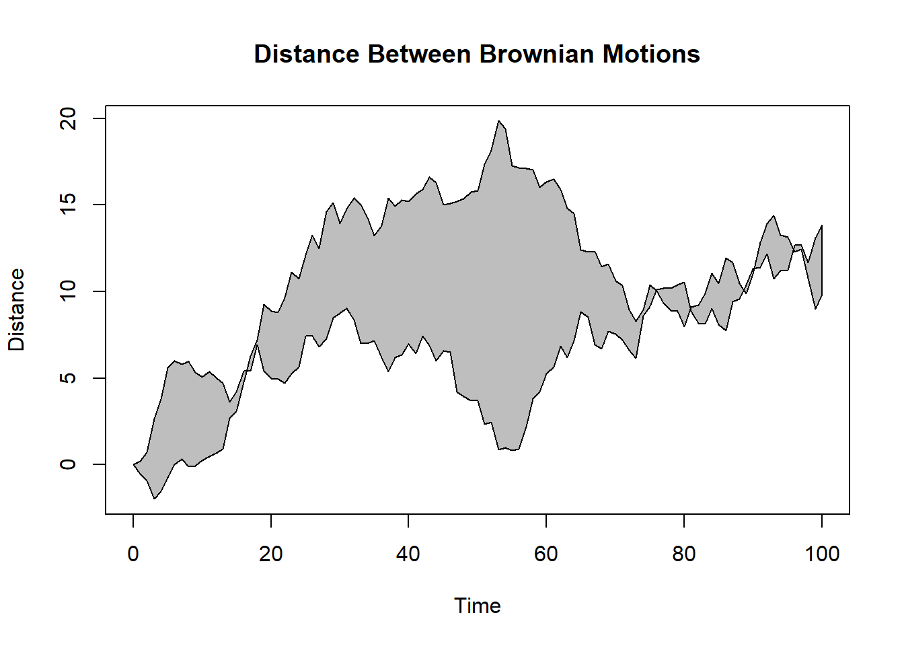
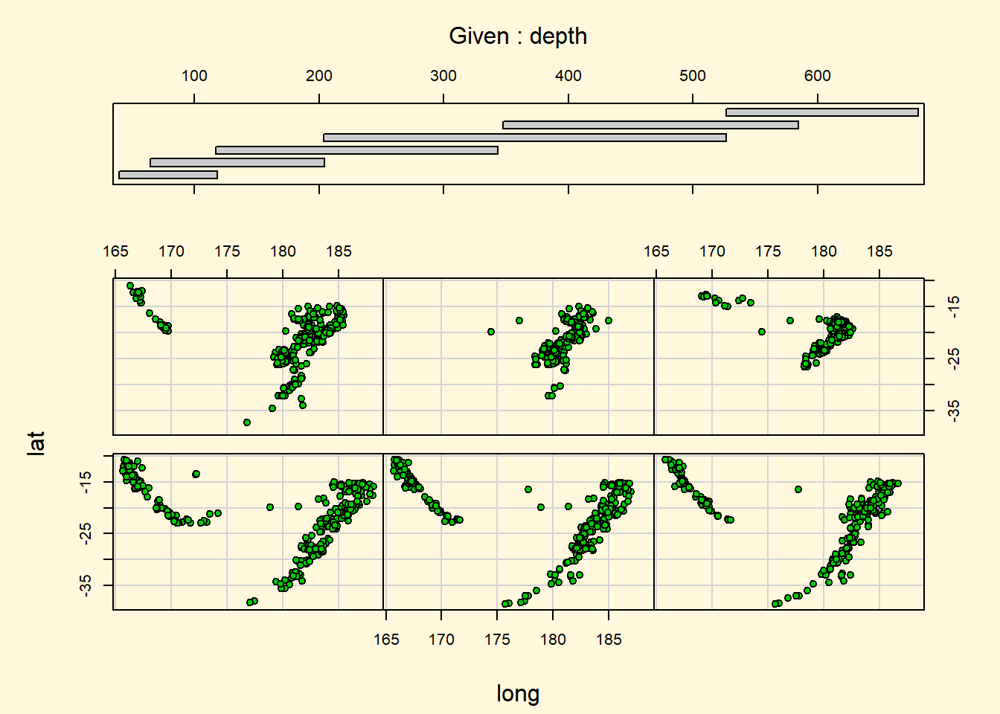

IntroR
library(dplyr)
require(ggplot2)Часть I.
НАЧАЛО РАБОТЫ
Испытайте R в действии! R - одно из наиболее популярных современных программных средств для анализа данных и их визуализации. Это бесплатная программа с открытым кодом, предназначенная для операционных систем Windows, Mac OS X и Linux. Благодаря этой книге вы приобретете навыки, необходимые для овладения этой многофункциональной программой и ее эффективного использования для обработки ваших собственных данных.
Книга разделена на четыре части. Первая часть посвящена установке программы в ее базовой версии, знакомству с интерфейсом, импорту данных и преобразованию их в удобный для дальнейшего анализа вид.
Глава 1 познакомит вас с программной средой R. Эта глава начинается с обзора программы R и ее особенностей, которые делают ее столь мощным программным средством для современного анализа данных. После краткого объяснения того, как скачать и установить программу, следует описание пользовательского интерфейса на ряде простых примеров. Затем вы научитесь тому, как увеличить функциональность базовой версии при помощи расширений системы команд (так называемых дополнительных пакетов), которые можно скачать бесплатно с сетевых хранилищ. В конце главы размещены примеры, которые позволят применить ваши новые умения.
Как только вы познакомились с интерфейсом R, возникает следующая задача - загрузить ваши данные в программу. В современном богатом информацией мире данные могут поступать из разных источников и в разных форматах. В главе 2 описано множество методов, которые можно использовать для импорта данных в R. Первая половина главы посвящена описанию форматов, в которых R хранит данные, и рассказу о том, как вводить данные вручную. Во второй части обсуждаются методы импорта данных из текстовых файлов, веб-страниц, электронных таблиц, других статистических программ и баз данных.
Исходя из последовательности действий при обработке данных, возможно, следующим пунктом имело бы смысл обсудить управление данными и устранение ошибок в них. Однако многие пользователи, впервые познакомившиеся с R, больше интересуются ее мощными графическими возможностями. Чтобы не игнорировать этот интерес и не заставлять вас ждать, в главе 3 мы немедленно переходим к графическому представлению данных. В этой главе обсуждается, как создавать диаграммы, изменять их параметры и сохранять диаграммы в разных форматах. Рассказано, как на диаграммах выбирать цвета, типы символов и линий, шрифты, делать заголовки, надписи и списки условных обозначений. В заключение описано, как объединить несколько диаграмм на одном изображении.
После того как вам представилась возможность испытать графические возможности R, настало время вернуться к анализу данных. Они редко сразу поступают в готовом к использованию виде. Часто бывает необходимо потратить значительное количество времени, комбинируя данные из различных источников, устраняя ошибки (неправильно закодированные, несоответствующие, отсутствующие данные) и создавая новые (комбинированные, трансформированные, перекодированные) переменные, прежде чем вы сможете перейти к решению интересующих вас задач. В главе 4 описаны все основные способы управления данными в R, включая сортировку, слияние и разделение наборов данных, а также трансформацию, перекодировку и удаление переменных.
Глава 5 основана на материале, изложенном в главе 4. Здесь рассказано, как использовать числовые (арифметические, тригонометрические и статистические) и текстовые функции (разбиение строк, объединение и замену) в управлении данными. Для иллюстрации многих из описанных функций в этом разделе использованы много¬численные примеры. Далее разобраны управляющие конструкции (циклы, исполняемые при определенных условиях команды). После прочтения этого раздела вы научитесь создавать собственные функции в R. Это позволит расширить возможности R, объединив многие команды в одну легко настраиваемую функцию. В заключение обсуждаются мощные методы реорганизации и группировки данных, которые часто бывают полезными при подготовке данных к дальнейшему анализу.
После прочтения главы 1 вы подробно познакомитесь с программированием в среде R. Вы приобретете навыки, необходимые для ввода данных и получения их из внешних источников, а также для устранения ошибок в данных. Кроме того, вы получите опыт создания, изменения параметров и сохранения различных типов диаграмм.
ГЛАВА 1.
Знакомство с R
В этой главе:
- Устанавливаем R.
- Знакомимся с языком программирования R.
- Запускаем программу.
За последнее время методы анализа данных принципиально изменились. С появлением персональных компьютеров и Интернета объемы данных значительно возросли. Коммерческие компании обладают терабайтами данных о потребителях, правительственные, академические и частные исследовательские институты оперируют обшир¬ными архивными данными и материалами обследований по многим направлениям. Извлечение информации (не говоря уже о знаниях) из этих огромных объемов данных превратилось в самостоятельную отрасль деятельности. В то же время представление информации в легкодоступном и усвояемом виде стало более сложной задачей.
Развитие наук, посвященных анализу данных (статистика, психометрика, эконометрика, машинное самообучение) не отстает от взрывообразного роста объема данных. До эпохи персональных компьютеров и Интернета новые статистические методы разрабатывались учеными-теоретиками, которые публиковали свои результаты в виде статей в специализированных журналах. Могли пройти годы, прежде чем эти методы доходили до программистов и встраивались в широко доступные программы для статистической обработки данных. В наше время новые методы появляются ежедневно. Исследователи-статистики публикуют новые и усовершенствованные методы вместе с программным кодом, который их реализует, на легкодоступных веб-сайтах.
Появление персональных компьютеров изменило подход к анализу данных еще одним образом. Когда анализ данных проводился в вычислительных центрах, компьютерное время было дорого и труднодоступно. Аналитики заранее тщательно устанавливали все параметры анализа. Когда анализ завершался, вывод результата занимал десятки или сотни страниц. Аналитик должен был просмотреть все их, оставляя нужное и отсеивая лишнее. Многие распространенные статистические программы были изобретены в ту эпоху и до сих пор в некоторой степени придерживаются этого алгоритма.
С появлением дешевого и легкого доступа к анализу данных, предоставляемого персональными компьютерами, произошла смена парадигмы. Вместо того чтобы требовать предварительной установки всех параметров анализа, процесс стал в значительной степени интерактивным. При этом результат каждого этапа анализа служит данными для следующего этапа. Схема типичного анализа данных приведена на рис. 1.1. На любом этапе анализа могут быть произведены трансформация данных, вставка пропущенных значений, добавление или удаление переменных, после чего процесс продолжается. Завершается этот процесс тогда, когда аналитик считает, что он или она полностью исследовал(а) данные и ответил(а) на все относящиеся к делу вопросы, на которые можно было ответить.
Рис. 1.1. Этапы типичного анализа данных Появление персональных компьютеров (а в особенности мониторов с высоким разрешением) также повлияло на то, как мы понимаем результаты и представляем их. Изображение действительно может стоить тысячи слов, а люди весьма успешно извлекают информацию из визуальных образов. Современные методы обработки данных все больше опираются на графические способы представления результатов. Итак, современному исследователю необходимо получать данные из разных источников (системы управления базами данных, текстовые файлы, статистические программы и электронные таблицы), объединять фрагменты данных, аннотировать их и удалять ошибки, анализировать их при помощи новейших методов, представлять результаты в легко поддающемся интерпретации и наглядном виде, а также включать результаты в привлекательные отчеты, которые могут быть распространены среди заинтересованных лиц и общественности.
1.1 Зачем использовать R?
R - это язык программирования и среда для статистических вычислений и графического анализа, сходный с языком S, первоначально разработанным в Белл Лабораториз (Bell Labs). Это программа для анализа данных с открытым кодом, которая поддерживается большим и активным исследовательским сообществом по всему миру. Однако существует много распространенных программ для статистической и графической обработки данных (таких как Microsoft Excel, SAS, IBM SPSS, Stata и Minitab).
Зачем переходить на R?
У R есть много особенностей, которые позволяют рекомендовать именно эту программу:
- большинство коммерческих статистических программ стоят тысячи, если не десятки тысяч долларов. R - это бесплатная программа! Если вы учитель или студент, выгода очевидна;
- R - это мощная статистическая программа, в которой реализованы все способы анализа данных;
- R имеет современные графические возможности. Если вам нужно визуализировать сложные данные, то учтите, что в R реализованы самые разнообразные и мощные методы анализа данных из доступных;
- получение данных из разных источников в пригодном для использования виде может быть сложной задачей. R может импортировать данные из самых разных источников, включая текстовые файлы, системы управления базами данных, другие статистические программы и специализированные хранилища данных. R может также записывать данные в форматах всех этих систем;
- R представляет собой не имеющую аналогов платформу для простого написания программ, реализующих новые статистические методы;
- в R реализованы сложные статистические процедуры, еще недоступные в других программах. На самом деле новые функции становятся доступными для скачивания еженедельно. Если вы работаете в SAS, представьте, насколько невероятно было бы получать новую SAS-процедуру каждые несколько дней;
- если вы не хотите учить новый язык, существует множество графических пользовательских интерфейсов, в которых мощь R реализована в форме меню и диалогов;
- R работает на разных операционных системах, включая Windows, Unix и Mac OS X. Она, скорее всего, запустится на любом компьютере, который у вас есть (я даже видел руководства по установке R на iPhone, что впечатляет, но вряд ли является хорошей идеей).
Демонстрацию графических возможностей R можно видеть на рис. 1.2. Эта диаграмма, созданная при помощи одной строки программного кода, описывает зависимости между доходом, образованием и престижем для представителей рабочих, конторских и специальных профессий. Это матрица, составленная из диаграмм рассеяния, с обозначением разных групп при помощи цветов и символов, двумя типами аппроксимирующих линий - линейная регрессия и так называемое локально-взвешенное сглаживание (Locally Weighted Scatterplot Smoothing, LOESS), обозначающими границы доверительных интервалов эллипсами и двумя типами изображения плотности распределения точек на диаграмме (ядерная оценка функции плотности - kernel density estimation и график-щетка - rug plot). Кроме того, самый большой выброс на каждой диаграмме рассеяния автоматически подписан. Не беспокойтесь, если эти термины незнакомы вам. Мы подробно рассмотрим их в следующих главах. Сейчас просто поверьте мне, что это - замечательный график (и что статистики, которые читают это, просто пускают слюнки).
library(car)
scatterplotMatrix(~ income + education + prestige | type, data=Duncan)Рис. 1.2. Взаимосвязь между уровнем дохода (income), образования (education) и престижа (prestige) для представителей рабочих (blue-collar: bc), конторских (white-collar: wc) и специальных (prof) профессий. Источник: дополнительный пакет car (команда scatterplotMatrix, созданная Джоном Фоксом (John Fox)).
Диаграммы, подобные этой, сложно создавать в других статистических программах. В R их можно сделать при помощи одной-двух строк программного кода.
Вот главное, что показывает этот график:
- между уровнями образования, дохода и престижа работы существует линейная связь;
- в среднем рабочие профессии характеризуются более низким уровнем образования и престижа, а специальные профессии - более высоким. Конторские профессии занимают промежуточное положение;
- существует несколько интересных исключений. Инженеры на железных дорогах (RR.engineer) зарабатывают много, но имеют низкое образование. Быть министром (minister) престижно, но не прибыльно;
- уровни образования и (в меньшей степени) престижа профессии распределены бимодально, то есть низкие и высокие значения этих показателей встречаются чаще, чем средние.
Вы узнаете гораздо больше об этой диаграмме в главе 8. Сейчас важно понять, что в R можно создавать изящные, информативные, легко настраиваемые диаграммы простыми и логичными способами. Создание сходных диаграмм при помощи других статистических программ было бы сложным, долгим или невозможным.
К сожалению, для языка R свойственна пологая кривая обучения. Поскольку он может делать так много всего, объем документации и файлов помощи очень велик. Кроме того, т.к. многие из этих опций реализованы в дополнительных модулях, созданных независимыми исследователями, справочная документация бывает разобщенной и труднодоступной. Научиться выполнять все виды анализа, реализованные в R, действительно очень непросто.
Задача этой книги - сделать овладение R быстрым и простым. Мы рассмотрим достаточно много возможностей R, чтобы вы смогли начать обработку собственных данных, с указаниями на то, где можно получить дополнительную информацию. Давайте начнем с установки программы.
1.2 Получение и установка R
R можно бесплатно скачать из «всеобъемлющего сетевого архива R» (Comprehensive R Archive Network, CRAN) по адресу https://cran.r-project.org. Предварительно скомпилированные загрузочные файлы доступны для Linux, Mac OS X и Windows. Следуйте инструкциям по установке программы в вашей операционной системе. Позже мы обсудим, как повышать функциональность программы при помощи дополнительных модулей, называемых «пакетами», - они также доступны в CRAN. В приложении H рассказано, как обновлять программу.
1.3 Работа в R
R - это чувствительный к регистру клавиатуры интерпретируемый язык программирования. Вы можете либо вводить команды по одной в ответ на приглашение на ввод команды (>), либо запускать набор команд из исходного файла. Типы данных очень разнообразны: векторы, матрицы, таблицы данных и списки (совокупность нескольких объектов). Мы обсудим все эти типы данных в главе 2.
Основной функционал программы реализуется при помощи встроенных и создаваемых пользователем функций, и все объекты (наборы данных) хранятся в памяти программы до завершения интерактивной сессии. Основные функции доступны по умолчанию. Остальные функции содержатся в пакетах, которые могут активироваться в ходе работы с программой по мере необходимости.
Командные строки состоят из функций и присвоений. R использует символ <- для присвоений вместо обычного знака равенства. Например, командная строка
x <- rnorm(5)
создает объект типа вектор, который называется x и содержит пять случайных элементов нормального распределения.
Примечание. В R можно использовать знак равенства для присвоений.
Однако немногие функции написаны таким образом. Поскольку это
нестандартный синтаксис, в некоторых ситуациях он не будет работать, и
программисты поднимут вас на смех. Можно писать присвоения в обратном
порядке. Например, выражение rnorm (5) -> x эквивалентно
предыдущей командной строке. Опять же, так писать не принято, и я не
рекомендую это делать.
Комментарии предваряются символом #. Любой текст, который идет после #, игнорируется программой.
1.3.1 Начало работы
Если вы используете Windows, запустите R из стартового меню. В операционной системе Mac дважды щелкните на значок R в директории приложений. В Linux наберите «R» в командной строке терминала. Любое из этих действий запустит R (см. рис. 1.3 в качестве примера).
Для того чтобы освоиться с интерфейсом, давайте потренируемся на простом выдуманном примере. Представьте, что вы изучаете физическое развитие и собрали данные о возрасте и весе 10 младенцев первого года жизни (см. табл. 1.1). Вы интересуетесь распределением значений веса и их зависимостью от возраста.

Рис. 1.3. Пример интерфейса R в операционной системе Windows
| Возраст (месяцы) | Вес (кг) | Возраст (месяцы) | Вес (кг) |
|---|---|---|---|
| 01 | 4.4 | 09 | 7.3 |
| 03 | 5.3 | 03 | 6.0 |
| 05 | 7.2 | 09 | 10.4 |
| 02 | 5.2 | 12 | 10.2 |
| 11 | 8.5 | 03 | 6.1 |
Программный код 1.1. Пример сессии в R
age <- c(1,3,5,2,11,9,3,9,12,3)
weight <- c(4.4,5.3,7.2,5.2,8.5,7.3,6.0,10.4,10.2,6.1)mean(weight)## [1] 7.06sd(weight)## [1] 2.077498cor(age, weight)## [1] 0.9075655plot(age, weight)Рис. 1.4. Диаграмма рассеяния веса младенцев (weight, в килограммах) в зависимости от их возраста (age, в месяцах)
Из программного кода 1.1 видно, что средний вес этих 10 младенцев составляет 7.06 кг, а стандартное отклонение равно 2.08 кг и что существует сильная линейная взаимосвязь между возрастом и весом (коэффициент корреляции равен 0.91). Эта взаимосвязь также видна на диаграмме рассеяния на рис. 1.4. Неудивительно, что по мере взросления младенцы в среднем становятся тяжелее.
Диаграмма рассеяния на рис. 1.4 информативна, но выглядит не очень привлекательно. Из последующих глав вы узнаете, как модифицировать графики в соответствии с вашими потребностями.
Совет. Чтобы получить представление о графических возможностях R,
наберите в командной строке demo(graphics). Некоторые из
графиков, которые при этом появятся, представлены на рис. 1.5. Другие
демонстрационные наборы графиков можно получить, напечатав
demo(Hershey), demo(persp) и demo(image). Для того чтобы увидеть полный
набор демонстрационных графиков, введите demo() без параметров.
demo(graphics)##
##
## demo(graphics)
## ---- ~~~~~~~~
##
## > # Copyright (C) 1997-2009 The R Core Team
## >
## > require(datasets)
##
## > require(grDevices); require(graphics)
##
## > ## Here is some code which illustrates some of the differences between
## > ## R and S graphics capabilities. Note that colors are generally specified
## > ## by a character string name (taken from the X11 rgb.txt file) and that line
## > ## textures are given similarly. The parameter "bg" sets the background
## > ## parameter for the plot and there is also an "fg" parameter which sets
## > ## the foreground color.
## >
## >
## > x <- stats::rnorm(50)
##
## > opar <- par(bg = "white")
##
## > plot(x, ann = FALSE, type = "n")##
## > abline(h = 0, col = gray(.90))
##
## > lines(x, col = "green4", lty = "dotted")
##
## > points(x, bg = "limegreen", pch = 21)
##
## > title(main = "Simple Use of Color In a Plot",
## + xlab = "Just a Whisper of a Label",
## + col.main = "blue", col.lab = gray(.8),
## + cex.main = 1.2, cex.lab = 1.0, font.main = 4, font.lab = 3)
##
## > ## A little color wheel. This code just plots equally spaced hues in
## > ## a pie chart. If you have a cheap SVGA monitor (like me) you will
## > ## probably find that numerically equispaced does not mean visually
## > ## equispaced. On my display at home, these colors tend to cluster at
## > ## the RGB primaries. On the other hand on the SGI Indy at work the
## > ## effect is near perfect.
## >
## > par(bg = "gray")
##
## > pie(rep(1,24), col = rainbow(24), radius = 0.9)
##
## > title(main = "A Sample Color Wheel", cex.main = 1.4, font.main = 3)
##
## > title(xlab = "(Use this as a test of monitor linearity)",
## + cex.lab = 0.8, font.lab = 3)
##
## > ## We have already confessed to having these. This is just showing off X11
## > ## color names (and the example (from the postscript manual) is pretty "cute".
## >
## > pie.sales <- c(0.12, 0.3, 0.26, 0.16, 0.04, 0.12)
##
## > names(pie.sales) <- c("Blueberry", "Cherry",
## + "Apple", "Boston Cream", "Other", "Vanilla Cream")
##
## > pie(pie.sales,
## + col = c("purple","violetred1","green3","cornsilk","cyan","white"))##
## > title(main = "January Pie Sales", cex.main = 1.8, font.main = 1)
##
## > title(xlab = "(Don't try this at home kids)", cex.lab = 0.8, font.lab = 3)
##
## > ## Boxplots: I couldn't resist the capability for filling the "box".
## > ## The use of color seems like a useful addition, it focuses attention
## > ## on the central bulk of the data.
## >
## > par(bg="cornsilk")
##
## > n <- 10
##
## > g <- gl(n, 100, n*100)
##
## > x <- rnorm(n*100) + sqrt(as.numeric(g))
##
## > boxplot(split(x,g), col="lavender", notch=TRUE)##
## > title(main="Notched Boxplots", xlab="Group", font.main=4, font.lab=1)
##
## > ## An example showing how to fill between curves.
## >
## > par(bg="white")
##
## > n <- 100
##
## > x <- c(0,cumsum(rnorm(n)))
##
## > y <- c(0,cumsum(rnorm(n)))
##
## > xx <- c(0:n, n:0)
##
## > yy <- c(x, rev(y))
##
## > plot(xx, yy, type="n", xlab="Time", ylab="Distance")
##
## > polygon(xx, yy, col="gray")
##
## > title("Distance Between Brownian Motions")
##
## > ## Colored plot margins, axis labels and titles. You do need to be
## > ## careful with these kinds of effects. It's easy to go completely
## > ## over the top and you can end up with your lunch all over the keyboard.
## > ## On the other hand, my market research clients love it.
## >
## > x <- c(0.00, 0.40, 0.86, 0.85, 0.69, 0.48, 0.54, 1.09, 1.11, 1.73, 2.05, 2.02)
##
## > par(bg="lightgray")
##
## > plot(x, type="n", axes=FALSE, ann=FALSE)
##
## > usr <- par("usr")
##
## > rect(usr[1], usr[3], usr[2], usr[4], col="cornsilk", border="black")
##
## > lines(x, col="blue")
##
## > points(x, pch=21, bg="lightcyan", cex=1.25)
##
## > axis(2, col.axis="blue", las=1)
##
## > axis(1, at=1:12, lab=month.abb, col.axis="blue")
##
## > box()
##
## > title(main= "The Level of Interest in R", font.main=4, col.main="red")
##
## > title(xlab= "1996", col.lab="red")
##
## > ## A filled histogram, showing how to change the font used for the
## > ## main title without changing the other annotation.
## >
## > par(bg="cornsilk")
##
## > x <- rnorm(1000)
##
## > hist(x, xlim=range(-4, 4, x), col="lavender", main="")##
## > title(main="1000 Normal Random Variates", font.main=3)
##
## > ## A scatterplot matrix
## > ## The good old Iris data (yet again)
## >
## > pairs(iris[1:4], main="Edgar Anderson's Iris Data", font.main=4, pch=19)
##
## > pairs(iris[1:4], main="Edgar Anderson's Iris Data", pch=21,
## + bg = c("red", "green3", "blue")[unclass(iris$Species)])
##
## > ## Contour plotting
## > ## This produces a topographic map of one of Auckland's many volcanic "peaks".
## >
## > x <- 10*1:nrow(volcano)
##
## > y <- 10*1:ncol(volcano)
##
## > lev <- pretty(range(volcano), 10)
##
## > par(bg = "lightcyan")
##
## > pin <- par("pin")
##
## > xdelta <- diff(range(x))
##
## > ydelta <- diff(range(y))
##
## > xscale <- pin[1]/xdelta
##
## > yscale <- pin[2]/ydelta
##
## > scale <- min(xscale, yscale)
##
## > xadd <- 0.5*(pin[1]/scale - xdelta)
##
## > yadd <- 0.5*(pin[2]/scale - ydelta)
##
## > plot(numeric(0), numeric(0),
## + xlim = range(x)+c(-1,1)*xadd, ylim = range(y)+c(-1,1)*yadd,
## + type = "n", ann = FALSE)
##
## > usr <- par("usr")
##
## > rect(usr[1], usr[3], usr[2], usr[4], col="green3")
##
## > contour(x, y, volcano, levels = lev, col="yellow", lty="solid", add=TRUE)
##
## > box()
##
## > title("A Topographic Map of Maunga Whau", font= 4)
##
## > title(xlab = "Meters North", ylab = "Meters West", font= 3)
##
## > mtext("10 Meter Contour Spacing", side=3, line=0.35, outer=FALSE,
## + at = mean(par("usr")[1:2]), cex=0.7, font=3)
##
## > ## Conditioning plots
## >
## > par(bg="cornsilk")
##
## > coplot(lat ~ long | depth, data = quakes, pch = 21, bg = "green3")
##
## > par(opar)1.3.2 Как получить помощь
R обладает обширными справочными материалами. Научитесь ориентироваться в них, и это поможет вам при работе в программе. Встроенная система помощи содержит подробные разъяснения, ссылки на литературу и примеры для каждой функции из установленных пакетов. Справку можно вызвать при помощи функций, перечисленных в табл. 1.2.
Таблица 1.2. Функции вызова справки в R
| Функция | Действие |
|---|---|
help.start() |
Общая справка |
help ("нечто")ИЛИ ?нечто |
Справка по функции нечто (кавычки необязательны) |
help.search("нечто") ИЛИ ??нечто |
Поиск в справке записей, содержащих нечто |
example("нечто") |
Примеры использования функции нечто (кавычки необязательны) |
RSiteSearch("нечто") |
Поиск записей, содержащих нечто в онлайн-руководствах и заархиви-рованных рассылках |
apropos("нечто", mode="function") |
Список всех доступных функций, в названии которых есть нечто |
data() |
Список всех демонстрационных данных, содержащихся в загруженных пакетах |
vignette() |
Список всех доступных руководств по загруженным пакетам |
vignette("нечто") |
Список руководств по теме нечто |
#Коэффициенты модели
equatiomatic
library(equatiomatic)
fit <- lm(mpg ~ cyl + disp, mtcars)
# show the theoretical model
equatiomatic::extract_eq(fit)\[ \operatorname{mpg} = \alpha + \beta_{1}(\operatorname{cyl}) + \beta_{2}(\operatorname{disp}) + \epsilon \]
# display the actual coefficients
equatiomatic::extract_eq(fit, use_coefs = TRUE)\[ \operatorname{\widehat{mpg}} = 34.66 - 1.59(\operatorname{cyl}) - 0.02(\operatorname{disp}) \]
Диаграмма R Markdown
Диаграмма
library(DiagrammeR)
mermaid("
graph TD
A(Rounded)-->B[Rectangular]
B-->C{A Rhombus}
C-->D[Rectangle One]
C-->E[Rectangle Two]
")library(DiagrammeR)
mermaid("
graph TD
A[Hard edge] -->|Link text| B(Round edge)
B --> C{Decision}
C -->|One| D[Result one]
C -->|Two| E[Result two]
")library(DiagrammeR)
mermaid("sequenceDiagram
participant Alice
participant Bob
Alice->>John: Hello John, how are you?
loop Healthcheck
John->>John: Fight against hypochondria
end
Note right of John: Rational thoughts <br/>prevail!
John-->>Alice: Great!
John->>Bob: How about you?
Bob-->>John: Jolly good!")Simple mermaid diagram
library(DiagrammeR)
mermaid("graph LR
A-->B
", height = '10%', width = '100%')Simple mermaid diagram 2
library(DiagrammeR)
mermaid("graph TD
A-->B;
A-->C;
B-->D;
C-->D")Simple grViz 1
grViz("digraph flowchart {
# node definitions with substituted label text
node [fontname = Helvetica, shape = rectangle]
tab1 [label = '@@1']
tab2 [label = '@@2']
tab3 [label = '@@3']
tab4 [label = '@@4']
tab5 [label = '@@5']
# edge definitions with the node IDs
tab1 -> tab2;
tab2 -> tab3;
tab2 -> tab4 -> tab5
}
[1]: 'Questionnaire sent to n=1000 participants'
[2]: 'Participants came to clinic for evaluation n=700'
[3]: 'Participants non-eligible for the study n=100'
[4]: 'Participants eligible for the study n=600'
[5]: 'Study sample n=600'
")Simple grViz 2
grViz("digraph dot {
node [shape=rectange];
d1 [shape=point,width=0.01,height=0.01];
d2 [shape=point, width=0.01, height=0.01];
{'GE Раствор', 'GA Solution'}->d1[dir=none];
d1->'Stir 10 mins at 500 r/min';
'Stir 10 mins at 500 r/min'->d2[dir=none];
subgraph {
rank=same;
d2; '40oC';
}
d2->'40oC'[dir=none];
d2->'Homogenisation at 10000 r/min'}")#Flow grViz
grViz("
digraph boxes_and_circles {
# a 'graph' statement
graph [overlap = true, fontsize = 10]
# several 'node' statements
node [shape = box,
fontname = Helvetica]
A; B; C; D; E; F
node [shape = circle,
fixedsize = true,
width = 0.9] // sets as circles
1; 2; 3; 4; 5; 6; 7; 8
# several 'edge' statements
A->1 B->2 B->3 B->4 C->A
1->D E->A 2->4 1->5 1->F
E->6 4->6 5->7 6->7 3->8
}
")#Flow 2
grViz("
digraph boxes_and_circles {
# a 'graph' statement
graph [overlap = true, fontsize = 10]
# several 'node' statements
node [shape = box,
fontname = Helvetica]
A; B; C; D; E
node [shape = box,
fontname = Helvetica,
width = 1]
F[label = '@@2']
node [shape = circle,
fixedsize = true,
width = 0.9] // sets as circles
1; 2; 3; 4; 5; 6; 7; 8
node [shape = diamond,
fixedsize = true,
width = 3, height = 1] // sets as
9[label = '@@1']
# several 'edge' statements
9->1 [label='YES']
9->5 [label='No']
B->2 [label='NO']
B->3 [label='...']
B->4 C->9
1->D E->9 2->4 1->5 1->F
E->6 4->6 5->7 6->7 3->8
}
[1]: 'top нет сил'
[2]: 'но это'
")Flow chart 2
mermaid("
graph TD
A{Does your flowchart have arrows?} --> B[No]
A --> C(yes)
B --> D(Add them already)
C --> E((Yay, what a great flowchart!))
D -.->|you can even add text to them| A
")Flow chart 3
mermaid("
graph LR
X-->D
Y-->D
D--E
sq1[shape one]-- This can't be a shape. So sad. --- sq2[shape two]
cyr1((circle one))---cyr2((circle two));
")mermaid("
graph LR
X---D
Y---D
D-->E
sq1[shape one]-- This can't be a shape. So sad. --- sq2[shape two]
cyr1((circle one))---cyr2((circle two));
")Примечание. Это выдуманные данные. Сначала вы вводите данные о возрасте и весе в виде векторов, используя функцию с(), которая преобразует свои аргументы в вектор или список. Затем вычисляете среднее арифметическое и стандартное отклонение для значений веса, а также коэффициент корреляции между возрастом и весом и графически изображаете взаимосвязь между этими двумя переменными для визуального изучения тренда. Функция
q(),как показано в приведенном ниже программном коде, завершает сессию и позволяет вам выйти из программы.↩︎